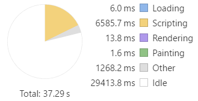
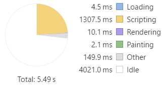

Note: This build setup described in this guide is experimental and subject to change.
Angular Universal
Table of Contents
Overview
Angular Universal is a technology that lets Angular applications run outside of the browser. Using Universal, you can run your Angular application on any Node.js server. You can use it to generate the HTML output on-demand, or generate HTML files ahead of time.
How does it work?
Angular Universal works by compiling the app to make it capable of running on the server, a form of Ahead of Time compilation (AOT). It's different from regular AOT because the app is compiled using platform-server instead of platform-browser. This changes the app behavior to make it capable of rendering to an HTML string on the server instead of the browser DOM.
The resulting app is necessarily limited. For example, a Universal app does not handle browser events such as mouse or keyboard inputs, nor send AJAX requests.
An available tool called Preboot will record browser events so they can be played back into the full Angular app once it is loaded.
In this guide, we will use Webpack to create an AOT-compiled version of the app, and then build on that to create a Universal server for the app.
Why do it?
Why would you want to create a static version of your app? There are two main reasons:
- SEO / No JavaScript
- Startup performance
SEO / No JavaScript
Your highly-interactive Angular app may not be easily digestible to search engines. Using Angular Universal, you can generate a static version of your app with navigation through the pages. This makes the content of your app searchable, linkable, and navigable without JavaScript. It also makes a site preview available to search engines and social media.
Startup Performance
Application startup time is critical for user engagement. While AOT compilation speeds up application start times, it may not be enough, especially on mobile devices with slow connections. 53% of mobile site visits are abandoned if pages take longer than 3 seconds to load. Your app needs to load quickly, to engage users before they decide to do something else.
With Angular Universal, you can generate landing pages for the app that look like the complete app. The pages are pure HTML, and can display even if JavaScript is disabled. The pages do not handle browser events, but they do support navigation through the site use routerLink.
The recommended scenario is to serve a static version of the landing page, then load your Angular app behind it. This gives the appearance of near-instant performance, and offers the full interactive experience once the full app is loaded. Better than a "loading" spinner, it's a real screen that engages the user.
Startup Comparison
To illustrate the impact of Universal, we have used the Timeline feature in Chrome DevTools. Timeline offers many ways to inspect the performance of your app. Here we have used it to compare the uncached startup performance of the Tour of Heroes app. Tour of Heroes is a simple demo app without much code or content, so it is smaller than the real apps you will build.
The test was done by measuring the time from browser refresh until the Tour of Heroes Dashboard is fully displayed. The numbers and bars below represent the time from the initial request until the Dashboard page is visible in the app, so lower numbers are better.
First, a PC browser with a local server, where browser performance and network response are very fast:
| Load Time | Time Allocation | |
|---|---|---|
| JIT | 1.01s | |
| AOT | 0.29s | |
| Universal | 0.04s |
You can see that the AOT-compiled version loaded faster than the JIT version (288ms versus 1000ms), and that most of the difference was in JavaScript execution. The universal version was the fastest (40ms), with no JavaScript to execute.
The difference may not seem significant, since all are sufficiently fast. But how would the app perform on a slower device with a slower network connection? CPU Throttling and Network Throttling can help you find out.
The test was repeated using a simulated 5x slower CPU and simulated 3G network (750kb/s).
| Load Time | Time Allocation | |
|---|---|---|
| JIT | 37.3s |  |
| AOT | 5.5s |  |
| Universal | 0.4s |
In this mobile scenario, the JIT app spends almost 30 seconds just waiting for its many files to load, followed by 6.5 seconds executing JavaScript. The AOT-compiled app is much better, spending just 4 seconds to load the bundle and 1.3 seconds to execute it, but still much more than the 3-second limit.
The Universal app displays the Dashboard page in just 0.4 seconds, since it displays without waiting for the JavaScript to load. The app would not be fully functional until its JavaScript bundles have loaded, which would be comparable to the load time for the AOT app, but the user can view the first page immediately.
If you want your app to be usable on slow networks, AOT is a must. Universal should be considered if first impressions are important.
The Example
This guide uses the Tour of Heroes app as an example. The app files remain the same, but additional support files are created to support building and serving the AOT and Universal versions.
The AOT and Universal versions of the app are both compiled by the AOT compiler. The difference is that AOT version gets compiled into a bundle that is sent to the client, while the Universal version is compiled into a web server that serves pages that are rendered from the app.
To build and run the AOT version, you need to create:
- an
index-aot.htmlfile - a main entry point,
main-aot.ts - a TypeScript config file,
tsconfig-aot.json - a Webpack config file,
webpack.config.aot.js a lite-server config file,
bs-config.aot.jsTo build and run the Universal version, you need to create:
a server-side app module,
app.server.ts- a Universal app renderer,
universal-engine.ts - an express web server to handle requests,
server-aot.ts - a TypeScript config file,
tsconfig-uni.json - a Webpack config file,
webpack.config.uni.js
The folder structure will look like this:
src/ index.html index file for JIT version
index-aot.html index file for AOT version *
main.ts bootstrapper for JIT version
main-aot.ts bootstrapper for AOT version *
style.css styles for JIT version
systemjs.config.js SystemJS configuration for JIT version
systemjs-angular-loader.js component loader that allows relative paths
tsconfig.json TypeScript configuration for JIT version
app/ app.module.ts application code
... ...
uni/ app.server.ts server-side application module *
server-aot.ts express web server *
universal-engine.ts server-side app renderer *
dist/ build.js AOT-compiled application bundle *
server.js AOT-compiled server bundle *
bs-config.json config file for lite server, JIT version
bs-config.aot.js config file for lite server, AOT version *
package.json npm configuration
tsconfig-aot.json TypeScript configuration for AOT version *
tsconfig-uni.json TypeScript configuration for Universal version *
webpack.config.aot.js Webpack configuration for AOT version *
webpack.config.uni.js Webpack configuration for Universal version *
The files marked with * are new and not in the original Tour of Heroes demo. This guide covers the new files in the sections below.
Preparation
Installing the tools
To get started, you need to install the necessary modules for AOT and Webpack.
@angular/compiler-cli- The ngc compiler that compiles Angular applications@angular/platform-server- Server-side components needed for compilationwebpack- The Webpack JavaScript bundler@ngtools/webpack- The Webpack loader and plugin for bundling compiled applicationsraw-loader- The Webpack loader for text filesexpress- The web server for serving the Universal application
You can install them with the following commands:
npm install @angular/compiler-cli @angular/platform-server --save-dev
npm install webpack @ngtools/webpack raw-loader express --save-dev
Component-relative URLs
The AOT compiler requires that @Component URLs for external templates and css files be component-relative.
That means that the value of @Component.templateUrl is a URL value relative to the component class file.
For example, an './app.component.html' URL means that the template file is a sibling of its companion app.component.ts file.
(The leading ./ is needed by Webpack to recognize that the string represents a path and not a module name.)
SystemJS allows both absolute and relative URLs (via systemjs-angular-loader), so you could have both in your app. Before building your app with AOT and Universal, you will need to convert them.
From this:
@Component({
selector: 'my-component',
templateUrl: 'app/demo/components/my.component.html'
})
To this:
@Component({
selector: 'my-component',
templateUrl: './my.component.html'
})
Server Transition
When a client-side Angular app bootstraps into a Universal page, it replaces the HTML that was there with its own rendered components. This transition is enabled by a shared id between the client and server apps. The id is defined using BrowserModule.withServerTransition in the AppModule that is shared by the client and server.
Open file src/app.module.ts and find the BrowserModule import. Then replace this:
@NgModule({
imports: [
BrowserModule,
FormsModule,
...
with this:
@NgModule({
imports: [
BrowserModule.withServerTransition({
appId: 'toh-universal'
}),
FormsModule,
...
Configuration - AOT
Main Entry Point
In the JIT-compiled app, main.ts is the entry point that bootstraps the app module.
An AOT-compiled app bootstraps differently, using platformBrowser instead of platformBrowserDynamic and using the factory that is created by pre-compiling the app module. A separate main entry point is needed.
In the src directory, create a main-aot.ts like the one shown here:
import { platformBrowser } from '@angular/platform-browser';
import { AppModuleNgFactory } from '../aot/src/app/app.module.ngfactory';
platformBrowser().bootstrapModuleFactory(AppModuleNgFactory);
There's a chicken-and-egg problem here.
The AppModuleNgFactory won't exist until the app is compiled, but the main-aot.ts won't compile because AppModuleNgFactory doesn't exist yet.
One way around this problem is to compile app.module.ts before main-aot.ts. You can tell the compiler to do that using the files array in the tsconfig-aot.json, which you will create in the next section.
"files": [
"src/app/app.module.ts",
"src/main-aot.ts"
],
Since app.module.ts appears first in the array, it will be compiled into an ngfactory first. So AppModuleNgFactory will be available for main-aot.ts.
Creating the tsconfig-aot.json
The AOT compiler transpiles TypeScript into JavaScript (like tsc), and compiles your app's components, services, etc. into executable JavaScript code.
You configure it using a JSON file similar to tsconfig.json. There are a few differences:
- The
modulesetting must bees2015. This creates JavaScript output withimportstatements (instead ofrequire()) that can be compiled and bundled. - The
filessetting includes the app module and the main AOT bootstrapper. See more about this in the section below. There is a new
angularCompilerOptionssection with the following settings:genDir- the output directory that will contain the compiledngfactorycode. When compiling via Webpack, this is used as a temporary directory.entryModule- the root module of the app, expressed as path/to/file#ClassName.skipMetadataEmit- set totruebecause you don't need metadata in the bundled application
Create a tsconfig-aot.json file in the project rood directory by copying your tsconfig.json and applying the changes described above. It should look like this:
{
"compilerOptions": {
"target": "es5",
"module": "es2015",
"moduleResolution": "node",
"sourceMap": true,
"emitDecoratorMetadata": true,
"experimentalDecorators": true,
"lib": ["es2015", "dom"],
"noImplicitAny": true,
"suppressImplicitAnyIndexErrors": true,
"typeRoots": [ "node_modules/@types/" ]
},
"files": [
"src/app/app.module.ts",
"src/main-aot.ts"
],
"angularCompilerOptions": {
"genDir": "aot",
"entryModule": "./src/app/app.module#AppModule",
"skipMetadataEmit" : true
}
}
Webpack Configuration
The Webpack Introduction explains how to configure Webpack to bundle your Angular application. Using Webpack for AOT is similar, but uses different loaders and plugins.
Create a webpack.config.aot.js file in the project root directory, and add the content shown below. The salient parts are explained in the following sections.
const ngtools = require('@ngtools/webpack');
const webpack = require('webpack');
module.exports = {
devtool: 'source-map',
entry: {
main: './src/main-aot.ts'
},
resolve: {
extensions: ['.ts', '.js']
},
target: 'node',
output: {
path: 'src/dist',
filename: 'build.js'
},
plugins: [
new ngtools.AotPlugin({
tsConfigPath: './tsconfig-aot.json'
}),
new webpack.optimize.UglifyJsPlugin({ sourceMap: true })
],
module: {
rules: [
{ test: /\.css$/, loader: 'raw-loader' },
{ test: /\.html$/, loader: 'raw-loader' },
{ test: /\.ts$/, loader: '@ngtools/webpack' }
]
}
}
Loader
For AOT, the loader to use for TypeScript files is @ngtools/webpack.
This loads TypeScript files and interprets the Angular decorators to prepare for AOT compilation.
Since it is used for TypeScript files, configure the loader for *.ts:
module: {
rules: [
...
{ test: /\.ts$/, loader: '@ngtools/webpack' } // use ngtools loader for typescript
]
}
When CSS and HTML files are encountered while processing the TypeScript, the raw-loader is used. It simply loads the file as a string, allowing Webpack to include it in the bundle.
For more complex loading scenarios, see the Webpack Introduction.
Plugin
The AOT plugin is called ngtools.AotPlugin, and performs TypeScript compilation and Angular compilation
using the same underlying compiler as ngc.
The plugin accepts several options, but the only required option is tsConfigPath.
Despite the ngtools documentation, the
entryModuleoption must be in thetsconfig-aot.json, not inside the Webpack config.
plugins: [
new ngtools.AotPlugin({
tsConfigPath: './tsconfig-aot.json'
}),
new webpack.optimize.UglifyJsPlugin({ sourceMap: true })
],
The tsConfigPath tells the plugin where to find the TypeScript configuration file to use when compiling.
This should be the AOT-specific tsconfig-aot.json described above.
The UglifyJsPlugin minifies the JavaScript output by removing spaces and shortening names. It slows down the build, so you can leave it off during development.
Input
Webpack's inputs are the source files for your application. You just need to give it the entry point(s), and Webpack follows the dependency graph to find what files it needs to bundle.
When performing AOT, the entry point is the main-aot.ts file described above.
Starting there, Webpack will pull in your app code and imported dependencies.
It will pull in the Angular libraries used by the app, but it will not pull in the Angular compiler, since it's not needed in an AOT-compiled app.
entry: {
main: './src/main-aot.ts'
},
The Webpack Introduction describes how to create separate bundles for app code, vendor libraries, and polyfills. For simplicity, this example shows a single-bundle scenario.
Output
After the plugin compiles the app files, Webpack bundles them into one or more output bundles. These are the JavaScript files that will be loaded by the browser to run the app. Tell Webpack where to put the bundles:
output: {
path: 'src/dist',
filename: 'build.js'
},
We put them in a dist directory under src, so the server can find them.
Build - AOT
Now that you've created the TypeScript and Webpack config files, you can build the application. First add the build command to the scripts section of your package.json.
"scripts": {
"build:aot": "webpack --config webpack.config.aot.js"
...
}
Then, from the command prompt, type
npm run build:aot
to build the output bundle.
As configured above, this transpiles the TypeScript files, Angular-compiles the components, and
Webpacks the results into a single output file, src/dist/build.js.
It also generates a source map, src/dist/build.js.map that
relates the bundle code to the source code.
Source Maps
Source maps let you use the browser's dev tools to set breakpoints in your source code, even though the browser is actually running an AOT-compiled bundle.
Examining the source map is a useful exercise because it shows the names of the files that are included in the bundle, in the order that Webpack included them.
Look at the src/dist/build.js.map:
{"version":3,"sources":[
"webpack:///webpack/bootstrap 097108a2a4bbafeb64bb",
"webpack:///./~/rxjs/Observable.js",
"webpack:///./~/rxjs/Subscriber.js",
"webpack:///./~/@angular/core/@angular/core.es5.js",
"webpack:///./~/@angular/common/@angular/common.es5.js",
"webpack:///./~/@angular/router/@angular/router.es5.js",
"webpack:///./~/rxjs/util/root.js",
"webpack:///./~/@angular/http/@angular/http.es5.js",
"webpack:///./src/app/hero.service.ts",
...
This shows that Webpack has included rxjs and @angular libraries ahead of the app's own hero.service.ts.
If you create multiple bundles, look at the source maps to make sure the same file isn't included in more than one bundle.
Serve - AOT
Now you've built the app bundle, so its time to test out the app.
Lite Server Configuration
The lite-server is used in the Quickstart and
Tour of Heroes examples to run and test the application in development.
To use it for the AOT app-compiled app, create a new configuration file, bs-config.aot.js.
It's different from the JIT version because it uses the index-aot.html as its default file.
It also uses a new port number so you can run the versions side-by-side. Here's the file:
module.exports = {
port: 3100,
server: {
baseDir: "src",
routes: {
"/node_modules": "node_modules"
},
middleware: {
// overrides the fallback middleware to use index-aot
1: require('connect-history-api-fallback')({ index: '/index-aot.html' })
}
}
};
Note that the above must be a JavaScript file, not JSON, because of the call to
require.
Serve Command
Add the serve command to the scripts section of your package.json. The command launches lite-server using the configuration file created above.
"scripts": {
"serve:aot": "lite-server -c=bs-config.aot.js",
...
}
Then, from the command prompt, type
npm run serve:aot
The server starts with BrowserSync, so it starts the browser and loads the page showing the Tour of Heroes app. You can use the app and test that it behaves the same as the JIT version.
Now you've built a working app using Webpack and AOT.
Configuration - Universal
Now you can use a similar approach to build the Universal app.
Server Code
The code specific to Universal is in three files:
- The app server module
- The Universal engine
- The web server
We'll go through these one at a time.
App Server Module
The app server module is an Angular module that imports both the client-side app module and Angular's ServerModule. It tells Angular how to bootstrap the application when running on the server.
Create an app.server.ts file in the src/uni directory and add the following code:
import { NgModule } from '@angular/core';
import { APP_BASE_HREF } from '@angular/common';
import { ServerModule } from '@angular/platform-server';
import { AppComponent } from '../app/app.component';
import { AppModule } from '../app/app.module';
@NgModule({
imports: [
ServerModule,
AppModule
],
bootstrap: [
AppComponent
],
providers: [
{provide: APP_BASE_HREF, useValue: '/'}
]
})
export class AppServerModule {
}
Universal Engine
The Universal Engine is the heart of a Universal application. It is the code that takes an HTML template and a route url, and renders the HTML for the page. The HTML output is the result of rendering the components that are displayed for the given route.
The rendered output could be stored as static HTML files to be served later. The demo code below serves the rendered pages directly, but it caches the output in memory, so that a given route only needs to be rendered once.
Create the universal-engine.ts file in the src/uni directory, and add the following code:
import * as fs from 'fs';
import { renderModuleFactory } from '@angular/platform-server';
const templateCache = {}; // cache for page templates
const outputCache = {}; // cache for rendered pages
export function ngUniversalEngine(setupOptions: any) {
return function (filePath: string, options: { req: Request }, callback: (err: Error, html: string) => void) {
let url: string = options.req.url;
let html: string = outputCache[url];
if (html) {
// return already-built page for this url
console.log('from cache: ' + url);
callback(null, html);
return;
}
console.log('building: ' + url);
if (!templateCache[filePath]) {
let file = fs.readFileSync(filePath);
templateCache[filePath] = file.toString();
}
// render the page via angular platform-server
let appModuleFactory = setupOptions.bootstrap[0];
renderModuleFactory(appModuleFactory, {
document: templateCache[filePath],
url: url
}).then(str => {
outputCache[url] = str;
callback(null, str);
});
};
}
Web Server
The web server accepts HTTP requests and sends back the response. For requests that are routes within the app, it creates the response by calling the Universal engine to render a page. For static file requests, it returns the file contents.
This web server is based on the popular Express web framework. Other web serving techniques would work for Universal, as long as they can send the appropriate requests to the universal engine.
Create the server-aot.ts file in the src/uni directory, and add the following code:
import 'zone.js/dist/zone-node';
import { enableProdMode } from '@angular/core';
import { AppServerModuleNgFactory } from '../../aot/src/uni/app.server.ngfactory';
import * as express from 'express';
import { ngUniversalEngine } from './universal-engine';
enableProdMode();
const server = express();
// set our angular engine as the handler for html files, so it will be used to render them.
server.engine('html', ngUniversalEngine({
bootstrap: [AppServerModuleNgFactory]
}));
// set default view directory
server.set('views', 'src');
// handle requests for routes in the app. ngExpressEngine does the rendering.
server.get(['/', '/dashboard', '/heroes', '/detail/:id'], (req, res) => {
res.render('index-aot.html', {req});
});
// handle requests for static files
server.get(['/*.js', '/*.css'], (req, res, next) => {
let fileName: string = req.originalUrl;
console.log(fileName);
let root = fileName.startsWith('/node_modules/') ? '.' : 'src';
res.sendFile(fileName, { root: root }, function (err) {
if (err) {
next(err);
}
});
});
// start the server
server.listen(3200, () => {
console.log('listening on port 3200...');
});
Note that the server depends on AppServerModuleNgFactory, which has not been built yet. We have a compilation problem similar to that faced in main-aot.ts. We solve it the same way, in tsconfig-uni.json.
Creating the tsconfig-uni.json
The TypeScript configuration file for Universal is almost the same as for AOT. The difference is the files section. For Universal, the files section lists the files for the server-side app module and the web server.
Create a tsconfig-uni.json file in the project root directory by copying your tsconfig-aot.json and changing the files section as shown below.
"files": [
"src/uni/app.server.ts",
"src/uni/server-aot.ts"
],
The app.server.ts file appears first, so it can be compiled before the server-aot.ts file requires it for its compilation.
Creating the webpack.config.uni.js
The Webpack configuration file for Universal is almost the same as for AOT. There are two differences:
- The entry points
- The output file name
You can share code between webpack configurations. See the Webpack Introduction for more information.
Create a webpack.config.uni.js in the project root directory by copying the webpack.config.aot.js. Then make the changes described in the sections below.
The entry points
For Universal, we name two entry points: the app server module and the web server. This ensures that the code for both appears in the final bundle.
entry: {
main: ['./src/uni/app.server.ts', './src/uni/server-aot.ts']
},
The output file
The output contains the all the code necessary to run the web server and serve the app. Put it in src/dist alongside the client AOT bundle.
output: {
path: 'src/dist',
filename: 'server.js'
},
Build and Serve - Universal
Now you can build and run the Universal application. First add the build and serve commands to the scripts section of your package.json.
"scripts": {
"build:uni": "webpack --config webpack.config.uni.js",
"serve:uni": "node src/dist/server.js",
...
}
Then, from the command prompt, type
npm run build:uni
to build the server bundle. Once it is created, type
npm run serve:uni
to start the server. The console window should say
listening on port 3200...
Exercising Universal
Open a browser to http://localhost:3200/ and you should be greeted by the familiar Tour of Heroes dashboard page. Meanwhile, the console window shows:
building: /
/styles.css
/node_modules/core-js/client/shim.min.js
/node_modules/zone.js/dist/zone.min.js
/dist/build.js
The first line shows that the server received a request for '/' and passed it to the Universal engine, which then built the HTML page from your Angular application. If you reload the page for the same URL, the console will report 'from cache' instead of 'building', and the server will return HTML that was previously rendered for that URL.
The remaining lines in the console show static files that were requested and returned by the server. The three .js files are needed for running the AOT version of the app. When the .js files are loaded into the browser, the Universal-rendered page is replaced by the Angular client app.
Disabling the Client App
To see how the Universal app behaves on its own, go to the src/dist directory and temporarily rename the build.js file to build.tmp.js. Then reload the browser, and the Universal app will display without loading the Angular code.
Now you can see the limitations of the Universal app. Navigation using routerLink works correctly: you can go from the Dashboard to the Heroes page and back, and you can click on a hero on the Dashboard page to display the Details page. But you cannot go to the Details from the Heroes page, because that uses a click event rather than a router link. The Hero Search on the Dashboard page does not work, nor does saving changes.
Throttling
Now rename build.tmp.js back to build.js so the app can load again. Then open the Chrome Dev Tools and go to the Network tab, and find the Network Throttling dropdown. Try 3G and other network speeds to see how long it takes for the app to load under various conditions.
Conclusion
Angular Universal can greatly improve the perceived startup performance of your app. The slower the network, the more advantageous it becomes to have Universal display the first page to the user.